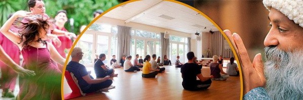

"Life is always in the wild. Just start with a simple formula: never miss the unknown. Always choose the unknown and go headlong. Even if you suffer, it's worth it-it always pays. You always come out of it more grown up, more mature, more intelligent." -The joy of Living Dangerously
---OSHO---
One who teaches the joy of life; mystics like Osho, are for the whole humanity not only for particular bunch of people. One never knows, which moment which word clicks the whole being & flowering happens. His words are the stepping stones for the new man he talks about. This app is just like the satellite of immense possibilities for the glorious radiation to trigger every single being via his words, meditation techniques, Jokes and on and on.
How can one charge on such a beautiful manifestation of creativity?
That's why it's free.
The way universe is showering life energy; answers to all & all questions of life is available in this mystery box- in one click.
Ask Bhagwan
"You can go beyond. It is within your power & it's your right. But you'll have to make the small effort of moving from mind to no-mind.
---OSHO---
Meditation is not a product that can be purchased or sold in a market, the way we sell someone's thoughts or things or even copyright it. Meditation has its own glare and authenticity which can never be imitated neither copyrighted, as they are not the general products of market. There is a difference between a materialistic commodity and the experience of one's own inner conscience. However the history says that for thousands of years the East has been meditating and there have been no trademarks on it.
A court in the European Union recently upheld rulings of lower tribunals (not courts) that had allowed OSHO as a trademark for OIF in the EU only. Sangeet explains the implications and preceding events, which are of high interest to all.
In arguing for this approval, OIF claimed that OSHO has nothing to do with meditation, it is just a brand.
While many of us are offended by the underlying sentiment of this, from a purely legal point of view, OIF is correct. And let us rejoice that they are right and that they have admitted this on the record. The trademark approval means that OIF can use OSHO as a brand for goods and services that OIF owns or legally controls. A trademark has nothing to do with meditation or the teachings of a spiritual master, as OIF has admitted.

Of course not. Does anyone seriously think that if a company has a brand that uses the name of a historical person like George Washington, Nelson Mandela, or Winston Churchill they somehow magically own the property of that person? Does the owner of a George Washington Savings and Loan brand magically own Mt. Vernon, George Washington's residence? Of course not. This is just a brand; it has nothing to do with ownership of any kind of property of any historical person.
Yes, it was, in the context of deciding if the name of a spiritual leader could be a TM.
No, it didn't. It was a glorified government office with jurisdiction over trademarks, not a court.
In fact, the process of the trademark proceedings weakened any legal claim OIF might have to copyright ownership. OIF has used three separate and contradictory arguments as to why it claims to own the copyrights. The first attempt was to claim that Osho signed the rights directly over to RFI, the US organization controlled by Sheela. But there were no original documents to prove this and no living person who could authenticate photocopies.
So, OIF came up with a new story. The new story was that Osho hadn't signed over rights to RFI, as OIF had claimed for years. They now claimed Osho had signed a power of attorney giving Sheela the power to transfer rights, and she transferred them to RFI. But OIF didn't have originals of these alleged documents either. So, they brought in Philip Toelkes (Niren), who testified that his memory of documents created 30+ years ago was so exact that he could verify these photocopies - which could easily have been tampered with - were exact copies of the original documents. OIF's opponents naturally challenged this claim.
In an attempt to issue a coup de grâce on the ownership issues, OIF then introduced an alleged will of Osho. Toelkes again came in to testify. He claimed that, though he was not licensed to practice law in India and did not know Indian law, he had drafted the will for Osho and could testify that Michael O'Byrne (Jayesh) and John Andrews (Amrito) had witnessed Osho's signature.
The will was submitted to forensic experts, and four experts to date have found that the "signature" on the "will" is an exact copy of a signature found on the cover of an Osho book from the 1970s. No two signatures of any living person are ever exactly the same, yet these are exactly the same, meaning the signature is forged. Further, we all know that Osho's signature changed over time. In the physical weakness of his last months, his signature was very different than it had been in the 1970s. In short, the "will" was found by the experts to be a pretty blatant forgery.
OIF quickly withdrew the will. When a police inquiry in India ordered OIF to produce the original of the will, Mukesh Sarda testified that Nirvano (formerly Vivek) had destroyed the original. Those of us who were in Pune at the time and living and working in Lao Tzu know that Nirvano did not have access to documents relating to Osho at that time. But even if that story was in any way credible, Nirvano died before Osho, and if she had destroyed the will, they would simply have had Osho sign another.
In short, the will, even if it had been authentic, would never have had any legal value if no original existed at the time of Osho's death. Toelkes would have known this, but the people at OIF tried to mislead the tribunal anyway. Like all the stories of this group of people, nothing in this mess holds together or makes sense.
In the process of creating this absurd story, Philip Toelkes has destroyed whatever credibility he might have had to verify documents. If he takes the stand in any court considering copyrights, he will be under oath and will be questioned about his testimony on the "will" under penalty of perjury. Even if he might be willing to perjure himself about the "will", the forensic findings would undermine his credibility on the authentication of any document.
This means that OIF cannot validate the photocopies of "copyright assignments" it has tried to use as original documents for decades. OIF admitted that their first theory was not true and now cannot prove their second, because their witness has lost all credibility. They've admitted their third try, the "will", was never valid. As a result, OIF's claim to copyright ownership has never been weaker or less plausible.
Absolutely not. Osho never signed any kind of agreement with any center, except the original Jeevan Jagruti Kendra in India, many years ago, and no original of that document exists. Osho asked people to start centers or agreed to their requests, and he asked them to use his name. People did that out of love for him, and they accepted as much of his guidance as they chose while he was alive out of love for him. It was all about meditation, and nothing about a brand.
Once Osho was out of the body, people continued to run centers inspired by his teachings, as they understood those teachings, and by their own inner guidance. The goods and services, such as programs, groups, meditations, and so on that people developed and have continued to develop have always belonged to them. They have never belonged to Osho.
Osho put his meditation techniques into the public domain around 40 years ago. Nothing can ever take them out of the public domain. This was in the tradition of the great masters of the past who created Vipassana, Zen techniques, and so on, for the good of humanity. Osho never assigned the rights in any meditation technique to anyone, and freely gave thousands of people permission to use the meditations, who have taught thousands of others without any legal agreements.
No, of course not. The decision wasn't about meditation or Osho's teachings. It was only about a brand.
In the past OIF has claimed that ownership of a brand would mean that it could control the content of Osho's teaching. OIF claimed that it could take legal control of centers and create a franchise and that it could own the center's intellectual property rights.
This is nonsense. Even Osho never owned rights in the centers, so no one using his Zen title as a brand could magically do so. A trademark is only about a brand, as OIF has admitted. OIF owns its own goods and services or what it owns through valid voluntary legal assignments directly to OIF - nothing else.
OIF currently has control of a brand, in the EU only, which no longer includes the UK. This means they can object to how the word osho is used in marketing in that area. It means nothing else.
You are free to choose what you want to do. No one can be forced to submit to OIF's control in any way. There can be no enforced "24-karat" interpretation of the historical person Osho. Ideas can never be owned under any circumstances. Expression of ideas can be owned in the form of copyrights. Brands, that have nothing to do with ideas, can be owned as trademarks. But ideas, interpretations of ideas, can never be owned, even by the person who first expresses an idea. No one knows this better than Osho, who often uses and interprets the ideas of others.
Centers can voluntarily choose to join an OIF franchise in the EU if they want to, of course. They could always have done this. Caveat: Anyone considering this kind of agreement should have all legal documents reviewed by a very good attorney who is representing your interests and not OIF's. Make sure you are not signing over ownership of your intellectual property rights, that OIF cannot take over the center or institute, that OIF cannot take over finances, and, for example, take away your retirement benefits. If OIF claims you have signed over rights, have all documents checked by your legal counsel. OIF has a history of misrepresenting this.
If you do not want your center or institute, etc. in the EU to be controlled by the people in OIF, the people implicated in the forgery of Osho's will, keep in mind that OSHO is only a brand. No one can ever own a historical person, so no one can stop you from identifying Osho the historical person as the inspiration for your work; no one can control your ideas or steal your intellectual property rights. You need to consult a good local attorney to find out how you can deal with the issue of a brand. It may be different in different countries in the EU. So, you need to check carefully.
It may be enough, for example, to change the "Osho ABC Meditation Center," to the "ABC Meditation Center, inspired by the teachings of the mystic Osho." But you need to ask an attorney in your country for the details. In some places, if you used "Osho" before the date that OIF registered it as a TM in the EU, you may be exempt from the trademark. Again, you need to check.
So, be careful, check everything, protect yourselves, and keep in mind this is only a brand. OIF has chosen to have nothing to do with meditation, but the teachings of the historical mystic Osho are all about meditation and many of us will all carry that on.
Prem Sangeet (Sangeet Duchane)
writes regularly for Viha Connection and Osho News.
SangeetDuchane.com
All articles in Osho News relating to the trademark and copyright issues can be found under Osho TM and ©
https://www.oshonews.com/2017/10/28/its-only-a-brand/